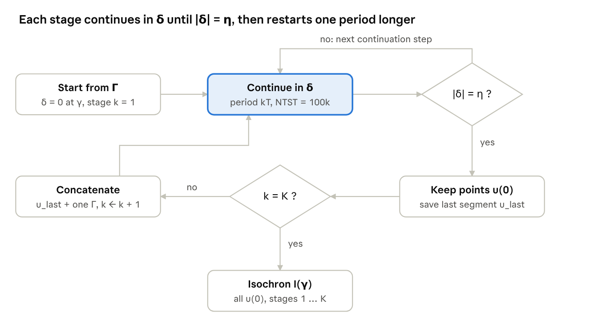

Library / Study kit / isochron_recipe.md
The recipe
What to compute, in what order, and what you should get: every step of the paper's Figures 2 and 3.
This recipe lists every calculation needed to reproduce the global
isochrons of the reduced Hodgkin-Huxley model (the paper’s Figures 2 and
3, and notebook 02_ISOCHRONS_continuation). Each step has the same
number as a STEP comment in
reproduce_isochrons.py, which does exactly this with XPPAUT
8.2 and its AUTO through pyauto-xpp.
Installation
pyauto-xpp is installed from the prebuilt wheels on its GitHub release. Wheels exist for Linux (x86_64, aarch64), macOS (Intel and Apple Silicon) and Windows, for Python 3.10 to 3.15. Nothing else is needed: no X11, no compiler and no separate XPPAUT. In a terminal:
python3 -m venv isochron-env # a separate Python environment
source isochron-env/bin/activate # Windows: isochron-env\Scripts\activate
pip install pyauto-xpp numpy matplotlib tqdm \
--find-links https://github.com/ZetaOne/pyauto-xpp/releases/expanded_assets/v0.3.0
python -c "import pyxpp; print('pyauto-xpp is installed')"tqdm draws the progress bars and matplotlib
the figures. In a conda environment, the same pip install
line works after conda activate <env>.
On macOS the commands are the same, in Terminal. The
one thing to check first is python3 --version: it must be
3.10 or newer. Apple’s own python3 (from the Xcode
command-line tools) is 3.9, for which there is no wheel, and
pip then fails. Install a newer Python from python.org or with
Homebrew (brew install python@3.12, then use
python3.12 -m venv isochron-env), or use a conda
environment. Apple Silicon and Intel Macs both get a prebuilt wheel.
If pyauto-xpp was installed with pixi (the project’s
git clone + pixi run lab route), use that
environment instead of a venv. Activate it in a terminal, then run the
scripts from any folder:
cd pyauto-xpp && pixi shell # this terminal now uses the project's environment
cd ~/isochron-scripts # wherever reproduce_isochrons.py was saved
python reproduce_isochrons.py --quickexit leaves the pixi shell. The pixi environment needs
tqdm: it is included in pyauto-xpp from the version after
0.3.0; with an older clone, run pixi add tqdm once in the
pyauto-xpp folder.
Running it
python reproduce_isochrons.py # the paper: 100 isochrons, Figures 2 and 3
python reproduce_isochrons.py --workers 8 # the same, 8 isochrons at a time
python reproduce_isochrons.py --quick # only the 0-phase isochron, about 5 minutes
python reproduce_isochrons.py --no-show # save the figures without opening windows- Defaults: the paper’s settings, which are 100 phases θ_i = i/100, 4 stages inside the orbit and 1 outside.
- Run time: all 100 isochrons take about 4.5 hours on
one core. With
--workers Nthe phases run N at a time, one XPPAUT per process, so the run is about N times faster. - Progress bars: they show the isochrons done, and the stages of the current one.
- Resuming: finished isochrons are skipped on a rerun, so an interrupted run carries on.
Results go to isochron_results/:
| File | Contents |
|---|---|
figure2_all_isochrons.png |
the paper’s Figure 2: all isochrons, coloured by phase |
figure3_zero_phase.png |
the paper’s Figure 3: (a) the 0-phase isochron, (b) n against arclength, (c) near the equilibrium |
isochron_<θ>.dat |
the points of each isochron: V, n, δ, stage, side (−1 inside, +1 outside) |
isochron_<θ>.log |
what each stage did |
orbit.dat |
the orbit Γ |
odes/reduced_hh.ode |
the model (steps 1–3) |
odes/isochron_<θ>_<in or out>_k<k>.ode |
the boundary value problem of every stage, with per = kT and γ, n_s filled in, ready for XPPAUT |
Overview
| Step | What is computed | Tool | Result |
|---|---|---|---|
| 1 | the model | XPP .ode | right-hand sides F(V, n) |
| 2 | the orbit, its period, phase zero | XPP integration, Initialconds > Periodic | Γ, T, γ0 |
| 3 | the isochron’s direction on Γ | XPP adjoint (Numerics > Averaging > New adj) | n_s(θ) |
| 4 | the boundary value problem | XPP .ode with bndry lines |
BVP file |
| 5 | start a stage | AUTO, Bdry Value start | first solution of the stage |
| 6 | choose the direction | 25 AUTO steps each way | inside / outside, extend / go back |
| 7 | follow the family | AUTO continuation in δ until |δ| = η | isochron points u(0) |
| 8 | start the next stage | concatenation, eq. (3.5) | starting solution of stage k + 1 |
| 9 | all phases, save, plot | loop over θ | isochron_θ.dat, isochrons.png |

Step 1. The model
The reduced Hodgkin-Huxley equations, the paper’s eq. (4.1):
\[ \begin{aligned} \dot V &= I - g_{Na}\, m_\infty(V)^3 (0.8 - n)(V - E_{Na}) - g_K\, n^4 (V - E_K) - g_L (V - E_L),\\ \dot n &= \alpha_n(V)(1-n) - \beta_n(V)\, n \end{aligned} \]
\[ \alpha_m = \frac{0.1(V+40)}{1 - e^{-(V+40)/10}},\qquad \beta_m = 4 e^{-(V+65)/18},\qquad m_\infty = \frac{\alpha_m}{\alpha_m+\beta_m} \]
\[ \alpha_n = \frac{0.01(V+55)}{1 - e^{-(V+55)/10}},\qquad \beta_n = 0.125\, e^{-(V+65)/80} \]
| I | g_Na | g_K | g_L | E_Na | E_K | E_L |
|---|---|---|---|---|---|---|
| 10 | 120 | 36 | 0.3 | 50 | −77 | −54.4 |
Integrator for everything that is integrated: classical Runge-Kutta
(XPP meth=rk4).
Step 2. The orbit Γ, the period T, and γ0
- Integrate from (V, n) = (−60, 0.3) for 300 time units, so the trajectory settles on Γ.
- XPP Initialconds > Periodic (with V as the plotted variable) returns the period T.
- Phase 0 is the point γ0 where V is largest. There V’ = 0, so find it by bisection on the time t in [T − 0.05, T + 0.05] for the sign change of V’. Forty halvings give double precision.
- Store one period of Γ from γ0 (time step 0.001); it is used to tell inside from outside.
Check: T = 11.8463 and γ0 = (44.7064, 0.4597).
Step 3. The direction n_s of the isochron at γ(θ)
- From γ0, run XPP’s adjoint (Numerics > Averaging, grid 6400, New adj). It gives Z(t) = (Z_V, Z_n) along Γ, the gradient of the asymptotic phase.
- For a phase θ: γ(θ) = Φ(θT, γ0) by integration (step at most 10⁻⁴), and Z = Z(θT) by interpolation.
- The isochron is perpendicular to Z: n_s = (Z_n, −Z_V) / |Z|. Orient it to point out of Γ: flip the sign if F(γ) × n_s > 0 (Γ runs counter-clockwise).
Check: at γ0, n_s = (0.99999999, −0.00013711) (pointing out of Γ, up to sign).
Step 4. The boundary value problem
Orbit segments u(s), 0 ≤ s ≤ 1, that take k periods and end on the short segment L_η = {γ + δ n_s, |δ| ≤ η}:
\[ \frac{du}{ds} = kT\, F(u), \qquad u(1) = \gamma + \delta\, n_s, \qquad u(0)\ \text{free} \]
As an XPP file (values for θ = 0; v' in a
bndry line means v at s = 1):
v'=per*(iapp-gna*minf(v)^3*(0.8-n)*(v-ena)-gk*n^4*(v-ek)-gl*(v-el))
n'=per*(an(v)*(1-n)-bn(v)*n)
par per=11.846275031,gv=44.70638155,gn=0.45973602
par tv=0.999999991,tn=-0.000137107891,d=0
bndry v'-gv-d*tv
bndry n'-gn-d*tn
@ total=1,dt=0.0001,meth=rungekuttaper = kT, (gv, gn) = γ, (tv, tn) = n_s, d = δ. Two
equations, two boundary conditions, one free parameter d: a
one-parameter family. The u(0) of every member is an isochron
point.
AUTO constants (the paper’s Table 1, as used here):
| NTST | NCOL | IAD | EPSL, EPSU | EPSS | ITNW | NWTN | ITMX | DS | DSMIN | DSMAX | η |
|---|---|---|---|---|---|---|---|---|---|---|---|
| 100 k | 4 | 3 | 10⁻⁸ | 10⁻⁶ | 5 | 3 | 8 | 10⁻⁵ | 10⁻⁸ | 0.1 | 10⁻⁴ |
Step 5. Start a stage
- Stage 1 starting solution: Γ itself from γ over one period, with δ = 0. Integrate the BVP’s equations with per = T from u(0) = γ over s ∈ [0, 1].
- Bdry Value start: run AUTO from this solution with
d as the continuation parameter. XPP’s AUTO puts the starting solution
on a uniform mesh, and the first Newton steps then move δ away from 0,
so:
- Take 6 steps with δ unbounded and DSMAX = 10⁻⁶. The mesh adapts (IAD = 3) and δ returns to about 10⁻¹⁰.
- Accept the start if all 6 steps converged and |δ| < η/10 at the last one.
- Otherwise retry with ITNW = 20, then with NTST doubled, then with NTST × 4.
- The last of the 6 points is the start of the stage.
Step 6. Choose the direction
Along most of the family δ changes by about 10⁻²⁰, far below the discretisation error, so the sign of DS does not fix the direction. Probe both ways (25 steps, 150 if undecided):
- Stage 1: keep the way whose last points lie inside Γ (inside branch) or outside (outside branch).
- Stage k > 1: one way goes back over stage k − 1, the other extends the isochron. Compute δ′ = (u((k − 1)/k) − γ) · n_s, the position one period before the segment’s end. Keep the way where |δ′| grows.
Step 7. Follow the family
Continue from the probe in the chosen direction, with bounds −η ≤ δ ≤ η, so AUTO stops when |δ| reaches η (one step beyond at most). Record u(0) and δ of every point.
- Inside branch: at most 5000 points per stage.
- Outside branch: |δ| may never reach η, because the contraction is too strong. Continue 100 points at a time until u(0) leaves −150 < V < 150, 0.15 < n < 0.95.
Step 8. Start the next stage: concatenation (eq. 3.5)
Take u_last, the last solution of stage k − 1 (it lasts k − 1 periods and ends at the end of L_η). Append one period of Γ from γ, rescale to [0, 1], set per = kT and NTST = 100k:
\[ u(s) = \begin{cases} u_{last}\!\left(\tfrac{k}{k-1}\, s\right), & 0 \le s \le \tfrac{k-1}{k} \\[3pt] u_\Gamma\big(ks - (k-1)\big), & \tfrac{k-1}{k} < s \le 1 \end{cases} \]
Sample it on 4000k + 1 points, then repeat steps 5 to 7 with it as the starting solution. Do stages k = 1, …, 4 inside Γ and stage 1 outside.
Step 9. All phases, saving, plotting
For θ_i = i/100, i = 0, …, 99, repeat steps 3 and 5 to 8, using the same BVP model with new values of gv, gn, tv, tn. Save the u(0) points of each stage:
isochron_<theta>.dat: V n delta stage side (side −1 inside Γ, +1 outside)Plot all isochrons with Γ and the nullclines V′ = 0, n′ = 0 (the paper’s Figure 2).
What you should get (the 0-phase isochron)
| Quantity | Paper | This recipe |
|---|---|---|
| T | 11.8463 | 11.846275 |
| γ0 | (44.7064, 0.4597) | (44.706382, 0.459736) |
| points per stage inside (k = 1, 2, 3, 4) | 718, 808, 751, 677 | |
| NTST used to start each stage | 100 k | 100, 200, 1200, 400 |
| δ at the end of each stage | ±η | about −1.0 × 10⁻⁴ |
| top of the 1st and 2nd excursion, n | 0.6802, 0.5517 | 0.68028, 0.55172 |
| excursions and boomerang turns up to 4T | 3 and 3 | 3 and 3 |
| time | about 5 minutes |
For all 100 isochrons, 465 of the 500 stages start with the paper’s NTST and ITNW. The rest need ITNW = 20 or a finer mesh (step 5).
Consistency check. Isochrons must not cross. Neighbouring isochrons only appear to cross where they run within about 10⁻⁴ mV of each other, along the repelling slow manifold. There the phase is so sensitive that a move of 10⁻⁴ mV changes it by about 0.1.